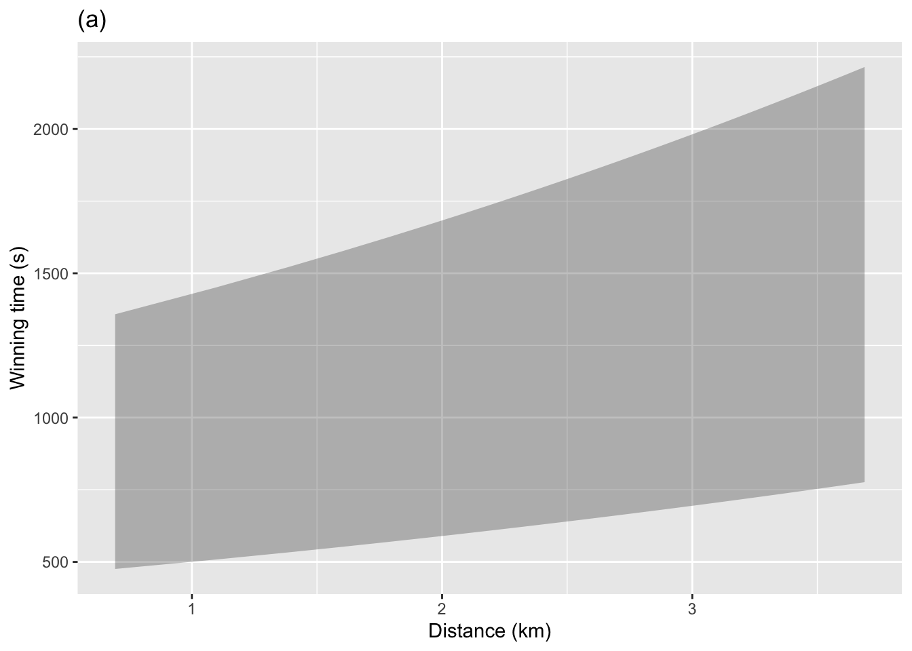
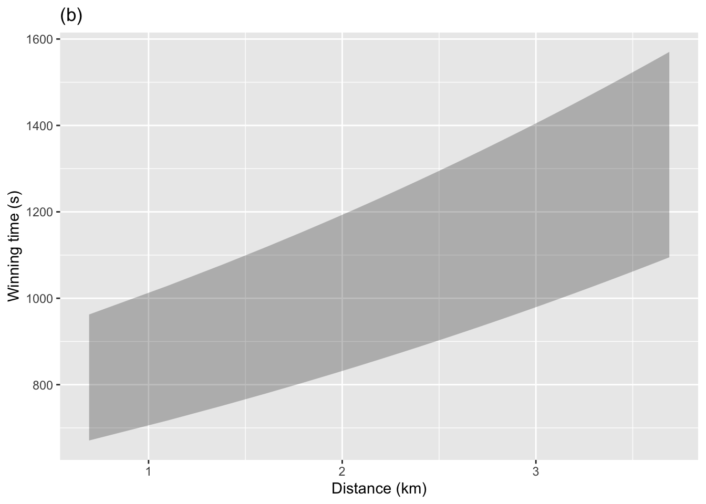
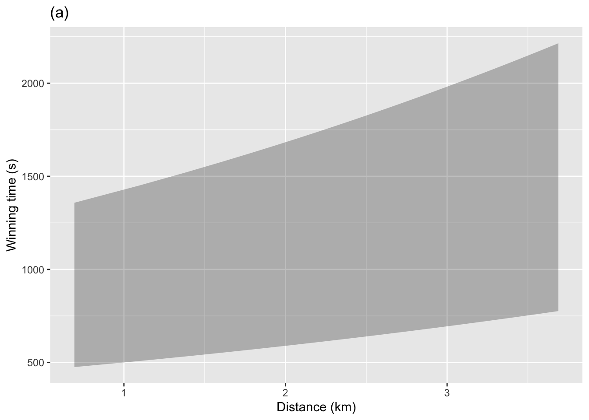
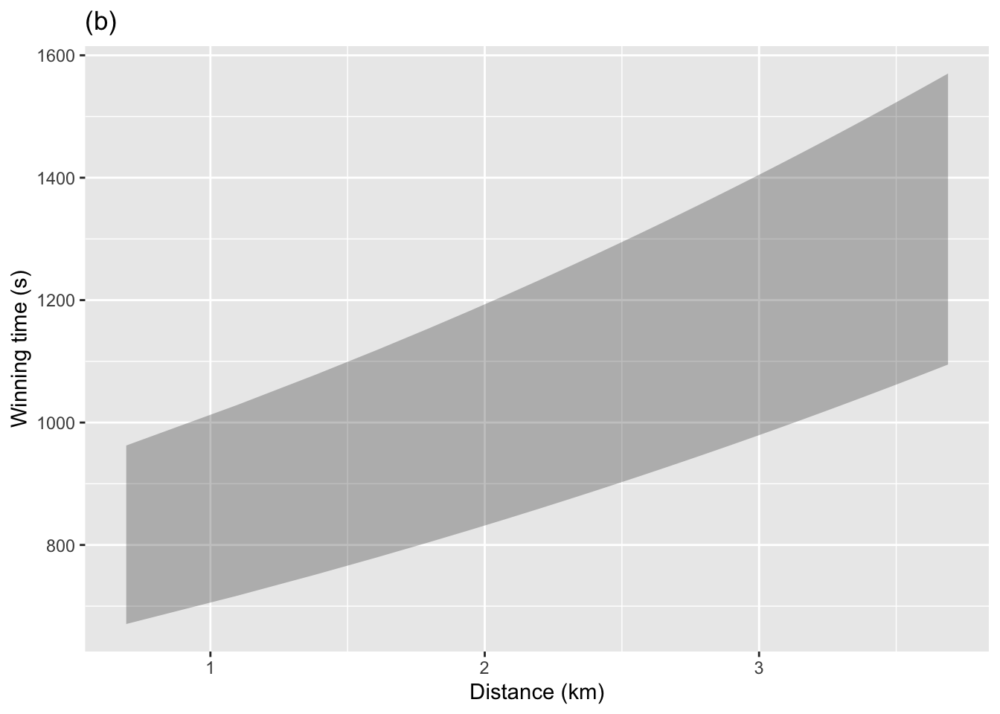
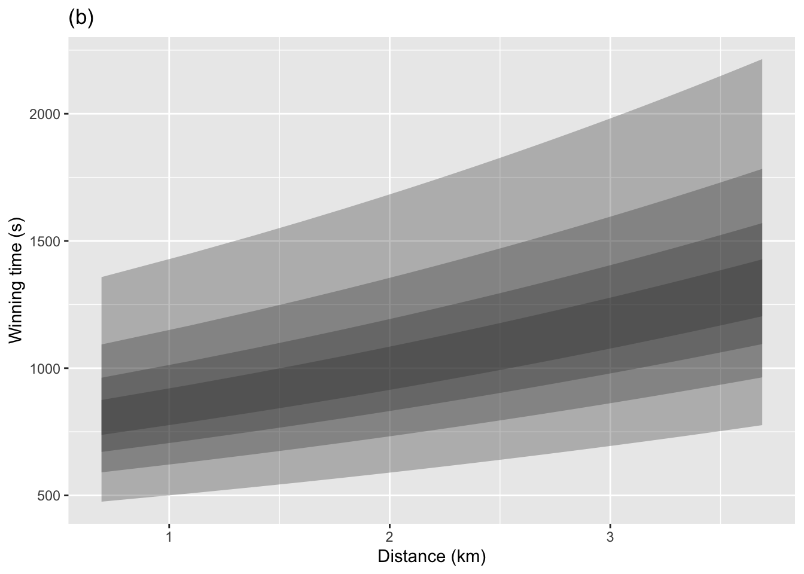

Constructing a prediction interval
Prof. Danny Kaplan
October 21, 2022
A prediction function takes values for explanatory variables as inputs and, as output, produces corresponding values for the prediction interval. Typically, the 95% prediction interval is shown. The graphic below shows both the 50% interval and a 95% interval for a model of winning time versus distance trained on the Scottish hill racing data.


Which graph, (a) or (b), corresponds to the 50% interval. -A- A 50% interval will be narrower than a 95% interval, so (b) is the 50% interval.
Judging by eye in (a) and (b), give the top and bottom of the 95% prediction interval and the 50% prediction interval when the distance is 10 km. -A- 50% interval runs from about 670 to 950 seconds. The 90% interval runs from about 500 to 1300 seconds.
Drawing the prediction intervals as bands gives the misleading idea that any value between the top and bottom of the band is equally likely. But values toward the center of the band are much more likely than those toward the edges or outside of the band.
The following graphic gives a better idea of the relative probability of each outcome by overlaying several prediction bands: 25%, 50%, 75%, 95%. The darker regions are more likely than the lighter regions.

About how much wider is the 95% band than the 75% band? -A- Almost twice as wide.
What is the probability of an individual outcome being somewhere inside the 95% band, but outside the 75% band? -A- 20%. Events outside the 75% band will be seen only 25% of the time. Events outside the 95% band will be seen only 5% of the time. That leaves 20% for the region between the two bands.